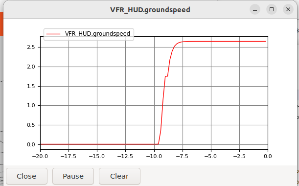
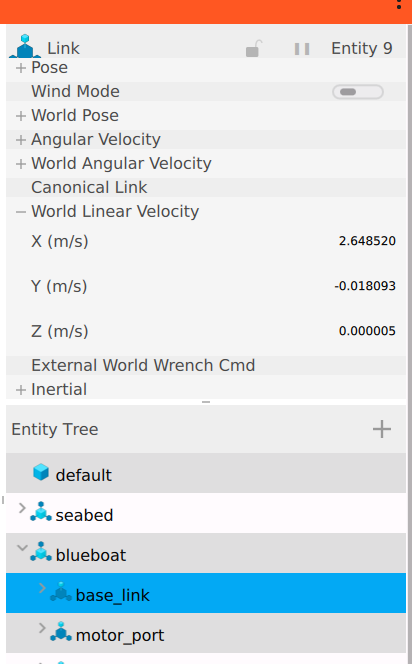
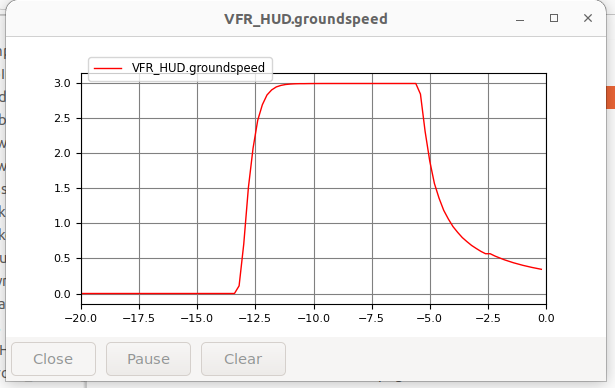
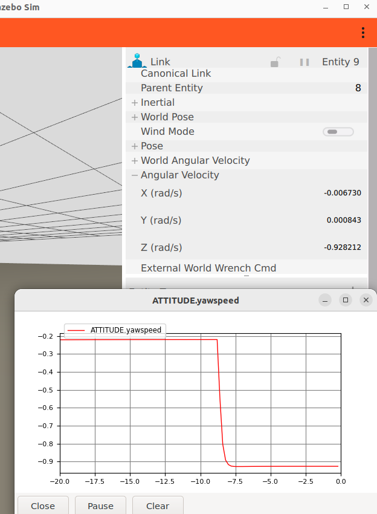
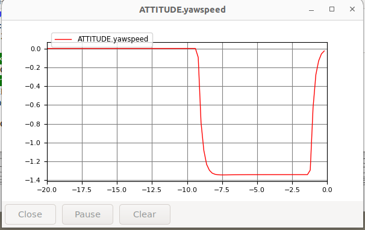

BlueBoat Parameters
This documents the sources and methods used to define the default BlueBoat vehicle dynamic and autopilot parameters.
Note
The physical values here are first estimates, derived from published specifications in parameter_refs.ods, and then adjusted in test until the open-loop response left enough control authority for the closed-loop performance the boat is rated for. They are a working set for simulation, not measurements taken off a vehicle.
Approach
Our approach in defining the BlueBoat parameters is as follows:
Use the easily measurable parameters, e.g., mass
Use what is provided as autopilot stabilization layer parameters
Derive what we can from first principles and approximation, e.g., inertia tensor
Select via testing and qualitative comparison, the hydrodynamic parameters that can not be easily measured or estimated. These are the free parameters to tune the response to match (qualitatively) the known closed-loop performance.
Set via reference
See parameter_refs.ods for the raw calculations. This spreadsheet is the raw calculations, provided here as a reference and to transparently show how we derived the first estimates of physical paramters. Many of those parameters then had to be tuned via testing, i.e., selected in test, so the spreadsheet shows the background, this document describes the process and the final values are in the URDF values.
Source |
Value |
Destination |
|
|---|---|---|---|
Mass |
BlueBoat spec sheets Boat chassis + 2 batteries |
blueboat_chassis.urdf.xacro |
|
Inertia tensor |
Estimated based on uniform box and L, W, H dimensions BR specs. Consistent with original values. |
blueboat_chassis.urdf.xacro |
|
Thrust limits |
Deduced from thruster performance at 16 V and max forward total thrust value from blueboat specs |
bluerobotics_parts/urdf/m200_weedless_prop_ccw.urdf.xacro and bluerobotics_parts/urdf/m200_weedless_prop_cw.urdf.xacro (known issue that they are repeated) |
|
Deadband |
Approximated from the graph for the m200 and engineering judgement. Small deadband. Can be tuned out with PWM settings per vessel. |
bluerobotics_parts/urdf/m200_weedless_prop_ccw.urdf.xacro |
Drag estimates - open loop
Derive estimates of the linear and quadratic drag based on published maximum velocity specs.
Surge
Estimate
From blueboat specs, max speed is 3 m/s and the max static thrust is 8.2 kgf. The Fossen drag implementation has both a linear and quadratic terms. We neglect the linear term and estimate the quadratic coefficient - see parameter_refs.ods
Test - Open-loop surge response
Run a test to command full forward thrust and measure the steady state speed. Compare the the 3 m/s target.
Run the scenario for the open-loop (MANUAL) test - Verify the SITL connection (Boat)
Verify the speed of the USV two ways (do both, to make sure the simulated model state agrees with the state the autopilot senses):
In Gazebo use UI to view the World Linear Velocity of the blueboat/base_link. (USV travels in x, so no need to resolve to body-frame.)
In MAVProxy…
module load graph
graph VFR_HUD.groundspeed
Then command full speed
rc 3 1900
The results do not meet expectations, we expected 3.0 m/s, but observe a steady-state speed 2.65 m/s.


Select in test
The referenced values give us a starting point. We test and modify manually to get the desired but test the end-to-end behavior. We reduce the quadratic drag so that there is a margin on necessary control authority to achieve closed loop speed of 3 m/s.

Yaw
Estimate
Because we don’t have a spec on the open-loop yaw rate, we need to either estimate the open-loop yaw rate or deduce values from the known control parameters. It is a coarse estimate, but we can use the value for the FF param from the published autopilot params - ATC_STR_RAT_FF = 0.8. A simple estimate is to consider the linear case where the FF term is the inverse of the plant dc gain. if you trace that through the autopilot system, that would be consistent with a linear drag value of -14.5 and we expect a turn rate max of 1.25 rad/s.
Test - open-loop yaw response
We run a similar test as described for surge to measure the max (full thrust) open-loop yaw response.
Again, check the steady state yaw rate in both the sim and the autopilot to make sure they are consistent.
module load graph
graph ATTITUDE.yawspeed
Then command full yaw rate
rc 1 1900

Select in test
As expected the yaw-rate is less than the target, so we iteratively reduce the linear yaw drag term to get an open-loop response with sufficient control authority to achieve the desired closed-loop response.

The autopilot parameter file
This section is about the autopilot’s configuration.
The file is blueboat_gazebo/params/blueboat_sitl.params. It is derived from Blue Robotics’ dump off a vehicle, params/ardupilot/ArduRover/4.7/Navigator/BlueBoat120.params in Blueos-Parameter-Repository, whose header reads Vehicle: Surface Boat / Platform: navigator / Version: 4.7.0-BETA. That dump is 951 lines, most of it one unit’s accelerometer calibration, radio setup and logging. Ours carries only the subset that describes the vehicle — frame, outputs, motor limits, control gains, speeds — plus the deltas simulation requires. Every value is the shipped one unless a DELTA comment beside it says otherwise.
It is loaded last. -f rover-skid makes sim_vehicle.py load ArduPilot’s own rover.parm and rover-skid.parm first, which supply the SITL side (fake accelerometer calibration so pre-arm passes, SIM_PIN_MASK, the mode slots) but also set SERVO1/3_MIN/MAX to 1000/2000 and SERVO1_FUNCTION 73 / SERVO3_FUNCTION 74 — the reverse of the shipped boat. Our file sets each of those again, and the last file wins.
Provenance: three descriptions, and they disagree
There is no single authoritative description of a configured BlueBoat. There are three:
Source |
What it is |
Authoritative for |
|---|---|---|
|
a dump off real hardware, including that unit’s own calibration |
the vehicle as built: frame, output assignment, motor limits, gains, speeds |
Blue Robotics’ SITL set |
the parameters they use for their own simulation |
nothing by default — useful as a second opinion where the dump is ambiguous |
the |
the BlueBoat contributed to ArduPilot’s model repository |
nothing by default — it is a third party’s simulation, not the manufacturer’s vehicle |
They differ on things that change behavior: which channel carries which throttle, whether a thruster is reversed, the servo range, the neutral trim, the cruise speed. So “we use Blue Robotics’ parameters” is not by itself a well-defined claim, which is why the third column exists — it records which source wins for which kind of parameter, so a disagreement becomes a decision rather than an accident.
The rule we follow: the hardware dump is authoritative for the vehicle, because it is the only one of the three describing a boat that exists. The other two are consulted, not copied. Where a value is taken from one of them instead, or changed for simulation, it carries a DELTA comment.